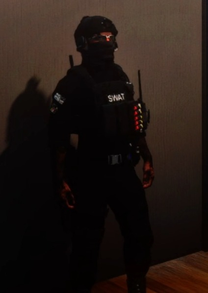
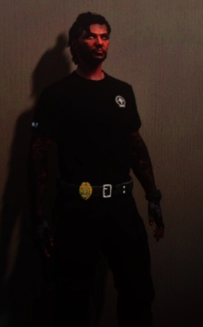
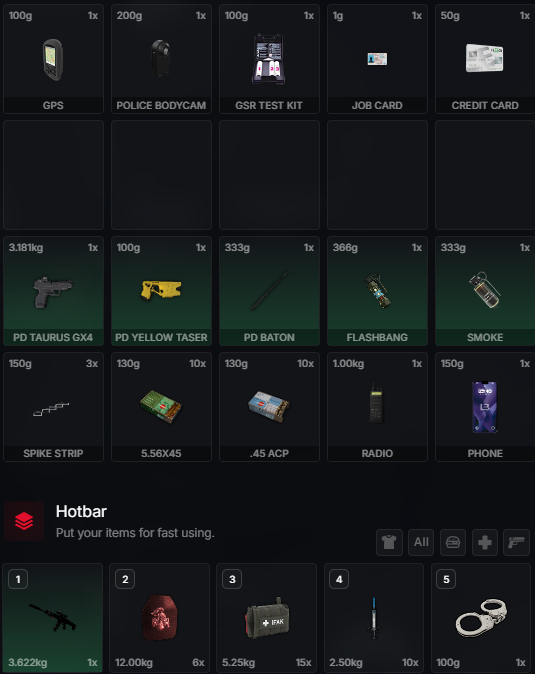

מדים טקטיים:
✦ Tops: 1013 / 1012
✦ Undershirt: 263
✦ Arms: 4 / 8
✦ Decals: 0
✦ Vests: 127
✦ Bags: 0
✦ Pants: 446
✦ Shoes: 25
✦ Masks: 169
✦ Neackwear: 1
✦ Hats: 59
✦ Eyeglasses: 15 Texture 1
✦ Earing: 83
מדי משמרת רגילה:
✦ Tops: 1007 Texture 8
✦ Undershirt: 15
✦ Arms: 52
✦ Decals: 0
✦ Vests: 0
✦ Bags: 120
✦ Pants: 446
✦ Shoes: 25
✦ Masks: 0
✦ Neackwear: 1
✦ Hats: -1
✦ Eyeglasses: -1
Left Arm: 62
✦ אקדח - PD Taurus GX4
✦ מרסס - PD SIG516 / PD RAM-7
✦ כדורים - 10 מחסניות לכדורים של האקדח והמרסס שבחרתם
✦ ווסטים - 10
✦ אייפק - 15
✦ אזיקים - 1
✦ אנדרנלין - 10
✦ טייזר - 1
✦ ג'י פי אס - 1
✦ מכשיר קשר - 1
✦ מצלמת גוף - 1
✦ קורא טביעת אצבע - 1
✦ בדיקת ג'י אס אר - 1
✦ רימון הלם - 2
✦ רימון עשן - 2
✦ דוקרנים - 5
בחירה חופשית, משתיק על הנשק רק במידה ואתם מגיבים לאירוע כמו שוד או פעילות מבצעית בשאר הזמן המשתיק עליכם באינבנטורי או בפרסונל סטאש
